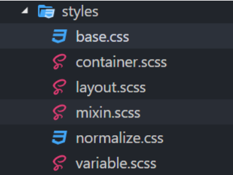

在最近的工作中，大大小小已开发过数个基于React的前端项目，从一开始的单打独斗到现在的多人协作开发，由于缺乏规范，样式管理一直是开发中的痛点，样式污染，难以定制化，依赖性高，各种问题层出不穷。痛定思痛，我们针对开发中遇到的问题并总结开发中的实际经验和网上的主流解决方案，最终形成一套样式管理规范。
本文首先对样式进行了分类，然后详细讲解了不同类别样式的管理方法。本样式管理规范只针对我们的项目，但对其他React项目也有普遍适用性，可以根据自己的需求进行个性化的定制与修改。
样式分类
对于React项目，可以大致将样式分为四类：
- 公共样式
- 第三方样式
- 容器样式，即
container样式
- 组件样式，即
component样式
前两类样式的管理与传统前端项目并无差异，React项目的重点在于后两类样式的管理。
公共样式
主要包括：
reset——样式重置及设置默认值，通常包括normalize.css和base.css，可根据需求定制layout——项目主体框架布局的相关样式variable——存放sass变量，主要包括各种主题颜色、按钮颜色mixin——可复用的样式片段，包括清除浮动、圆角边框、文本溢出省略显示、文本强制换行
引入方式：reset样式在入口文件index.html中通过link标签引入，layout也可以在index.html引入。如果在layout中使用sass，可以与其他文件统一放在styles文件夹中，在index.js中引入。对于variable和mixin，同样放在styles文件夹中，如果文件体积较小，可以合并成一个文件。

variable.scss
$primary-color : #5a8def; $green : #117511; $red : #950505; $blue : #5a8def; $body-background : #fff; $text-color : #666; $text-color-secondary : #999; $font-size-sm : 12px; $font-size-base : 12px; $font-size-lg : 14px; $border-color-base : #d9d9d9; $border-color-split : #e9e9e9; $border-base : 1px solid #d9d9d9; $border-split : 1px solid #e9e9e9; $border-radius-base : 0px; $border-radius-lg : 4px; $line-height-sm : 28px; $line-height-normal : 30px; $line-height-lg : 36px; $space-sm : 5px; $space-base : 10px; $space-lg : 20px;
|
mixin.scss
@mixin clearfix() { &:before, &:after { content: ""; display: table; } &:after { clear: both; } } .container { @include clearfix; } @mixin border-radius($radius) { -webkit-border-radius: $radius; -moz-border-radius: $radius; -ms-border-radius: $radius; border-radius: $radius; } .box { @include border-radius(10px); } @mixin text-ellipsis () { white-space: nowrap; overflow: hidden; text-overflow: ellipsis; }
|
第三方样式
主要是第三方类库的依赖样式，一般通过link标签引入。
引入方式：在index.html通过link标签引入
容器样式
容器即container，一般不为container单独编写样式文件，将所有容器的样式提取到一个文件中（暂定为container.scss，放在styles文件夹中），这样可以避免样式污染，提高代码复用性。类名命名采用类BEM的方式（开发人员表示不太习惯传统BEM命名，所以进行了改进），在项目开始前，前端开发人员集中对页面进行统一分析，分解为模块并命名。之后添加新类名要与其他开发人员统一确认，并保证无重名。
引入方式：放在styles文件夹中，在入口index.js引入
类BEM命名
.blockName-elName.modifier .shopCart .shopCart-title .shopCart-item .shopCart-item.selected .menu .menu-item .menu-item.active
|
组件样式
根据React的组件化开发思想，同时为了避免CSS的全局作用域的影响，对于组件即component的样式，我们采用css-in-js的方案。我们的项目中使用的是styled-components，它是目前 React 样式方案中最受关注的一种，它既具备了 css-in-js 的模块化与参数化优点，又完全使用CSS的书写习惯，不会引起额外的学习成本。
Styled-components
import React from 'react'; import styled from 'styled-components'; const Title = styled.h1` font-size: 1.5em; text-align: center; color: red; `; const Wrapper = styled.section` padding: 4em; background: white; `; <Wrapper> <Title>Hello World, this is my first styled component!</Title> </Wrapper>
|